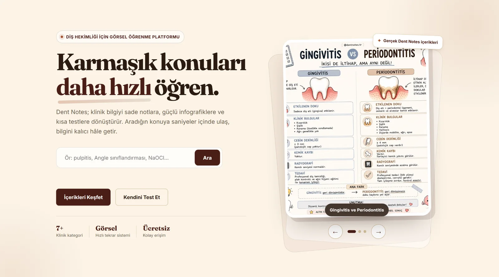
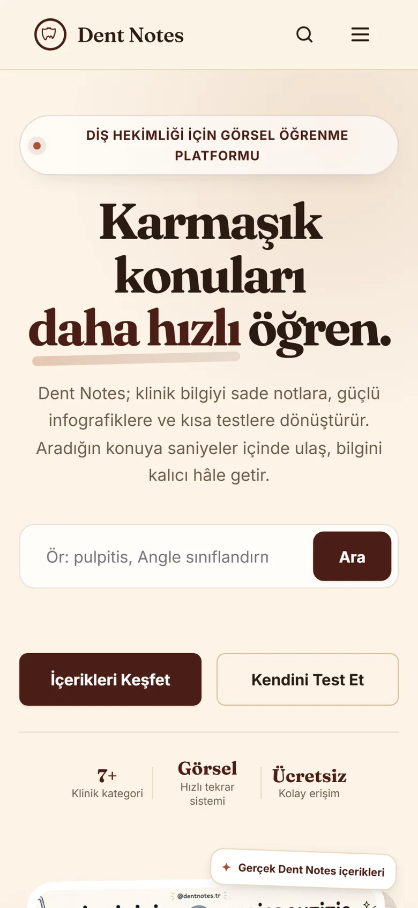

Dent Notes
Diş hekimliği öğrencilerinin karmaşık klinik konuları görsel içerikler, hızlı arama ve kısa testlerle daha kolay öğrenmesini sağlayan platform.
Yapılan çalışma Görsel öğrenme akışı, hızlı arama ve kısa test deneyimi sıfırdan tasarlandı ve geliştirildi.